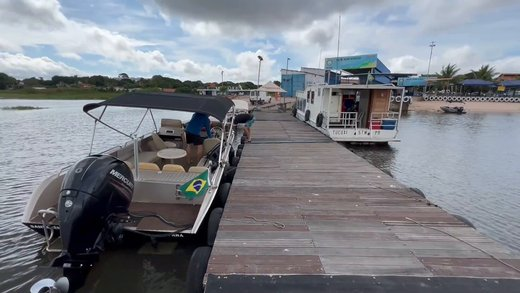

00:00:08.025
Lancha de motor de popa amarrada a um píer de madeira, com outras embarcações e prédios ao fundo.
Orla de Santarém (PA) · provável
O vídeo anuncia o roteiro que sai de Santarém e vai até o Jardim Vitória Régia no Canal do Jari.
Transcrição · 00:00:00 | 00:00:07 | 00:00:16
Turismo Aqui — quadro de vídeo publicado no YouTube